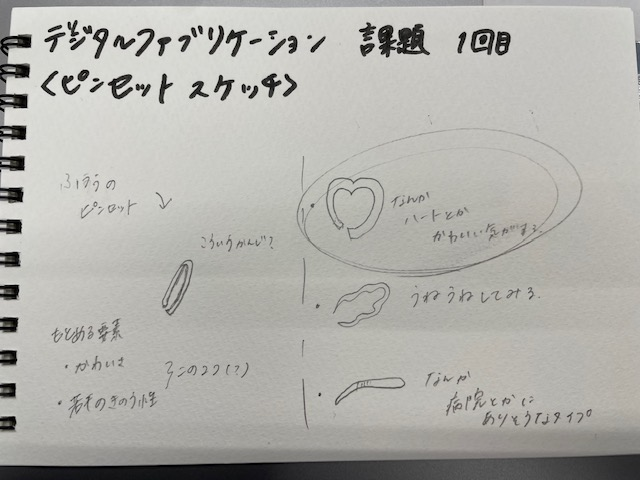
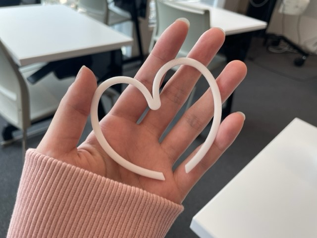

作品名：かわいいピンセット
スケッチ

構想→かわいいビジュアルのピンセットか、使いやすい・機能性のあるものを作りたかった。
実際に作ったピンセット

ー感想ー
想像していたよりも、ものすごく大きいものになってしまった。
掴む部分も一般的なピンセットのように、少し角度をつけたものにしたかったが、
ただの斜めになってしまった。改善できるポイントだと思う。
設計ファイル
作品の説明
構想スケッチ内にもあるように、せっかく作るなら「かわいい」を感じられる作品を作りたかった。
もしくは、実用性を重視したものを作りたかった。最終的には「かわいい」ピンセットを作ることにした。
「かわいい」＝「ハート」のなんとなくのイメージがあったので、ハートが他のピンセットにした。
作品への想い
日常で使うものをもっと「かわいい」の要素があるものを増やしたかった。
あとは、単に自分が「かわいい」ものを作りたい。というそれだけの考え。
この作品を見た人、全員が「かわいい」と感じてくれていたら目的達成！！
調べたこと
先生が送ってくださっていた、先輩の作成した動画を見ながら製作を行った。
それ以外に特に調べたことはなし。他には、授業内で製作に関してアドバイスをもらった。
使用動画